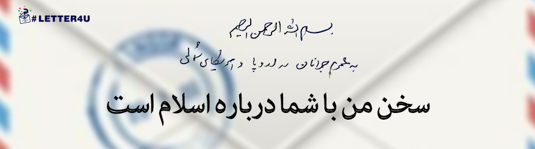

بسم الله الرّحمن الرّحیم
به عموم جوانان در اروپا و امریکای شمالی
حوادث اخیر در فرانسه و وقایع مشابه در برخی دیگر از کشورهای غربی مرا متقاعد کرد که دربارهی آنها مستقیماً با شما سخن بگویم. من شما جوانان را مخاطب خود قرار میدهم؛ نه به این علّت که پدران و مادران شما را ندیده میانگارم، بلکه به این سبب که آیندهی ملّت و سرزمینتان را در دستان شما میبینم و نیز حسّ حقیقتجویی را در قلبهای شما زندهتر و هوشیارتر مییابم. همچنین در این نوشته به سیاستمداران و دولتمردان شما خطاب نمیکنم، چون معتقدم که آنان آگاهانه راه سیاست را از مسیر صداقت و درستی جدا کردهاند.
سخن من با شما دربارهی اسلام است و بهطور خاص، دربارهی تصویر و چهرهای که از اسلام به شما ارائه میگردد. از دو دهه پیش به این سو ــ یعنی تقریباً پس از فروپاشی اتّحاد جماهیر شوروی ــ تلاشهای زیادی صورت گرفته است تا این دین بزرگ، در جایگاه دشمنی ترسناک نشانده شود. تحریک احساس رعب و نفرت و بهرهگیری از آن، متأسّفانه سابقهای طولانی در تاریخ سیاسی غرب دارد. من در اینجا نمیخواهم به «هراسهای» گوناگونی که تاکنون به ملّتهای غربی القاء شده است، بپردازم. شما خود با مروری کوتاه بر مطالعات انتقادی اخیر پیرامون تاریخ، میبینید که در تاریخنگاریهای جدید، رفتارهای غیر صادقانه و مزوّرانهی دولتهای غربی با دیگر ملّتها و فرهنگهای جهان نکوهش شده است. تاریخ اروپا و امریکا از بردهداری شرمسار است، از دورهی استعمار سرافکنده است، از ستم بر رنگینپوستان و غیر مسیحیان خجل است؛ محقّقین و مورّخین شما از خونریزیهایی که به نام مذهب بین کاتولیک و پروتستان و یا به اسم ملیّت و قومیّت در جنگهای اوّل و دوّم جهانی صورت گرفته، عمیقاً ابراز سرافکندگی میکنند.
این بهخودیخود جای تحسین دارد و هدف من نیز از بازگوکردن بخشی از این فهرست بلند، سرزنش تاریخ نیست، بلکه از شما میخواهم از روشنفکران خود بپرسید چرا وجدان عمومی در غرب باید همیشه با تأخیری چند ده ساله و گاهی چند صد ساله بیدار و آگاه شود؟ چرا بازنگری در وجدان جمعی، باید معطوف به گذشتههای دور باشد نه مسائل روز؟ چرا در موضوع مهمّی همچون شیوهی برخورد با فرهنگ و اندیشهی اسلامی، از شکلگیری آگاهی عمومی جلوگیری میشود؟
شما بخوبی میدانید که تحقیر و ایجاد نفرت و ترس موهوم از «دیگری»، زمینهی مشترک تمام آن سودجوییهای ستمگرانه بوده است. اکنون من میخواهم از خود بپرسید که چرا سیاست قدیمی هراسافکنی و نفرتپراکنی، اینبار با شدّتی بیسابقه، اسلام و مسلمانان را هدف گرفته است؟ چرا ساختار قدرت در جهان امروز مایل است تفکر اسلامی در حاشیه و انفعال قرار گیرد؟ مگر چه معانی و ارزشهایی در اسلام، مزاحم برنامهی قدرتهای بزرگ است و چه منافعی در سایهی تصویرسازی غلط از اسلام، تأمین میگردد؟ پس خواستهی اوّل من این است که دربارهی انگیزههای این سیاهنمایی گسترده علیه اسلام پرسش و کاوش کنید.
خواستهی دوم من این است که در واکنش به سیل پیشداوریها و تبلیغات منفی، سعی کنید شناختی مستقیم و بیواسطه از این دین به دست آورید. منطق سلیم اقتضاء میکند که لااقل بدانید آنچه شما را از آن میگریزانند و میترسانند، چیست و چه ماهیّتی دارد. من اصرار نمیکنم که برداشت من یا هر تلقّی دیگری از اسلام را بپذیرید بلکه میگویم اجازه ندهید این واقعیّت پویا و اثرگذار در دنیای امروز، با اغراض و اهداف آلوده به شما شناسانده شود. اجازه ندهید ریاکارانه، تروریستهای تحت استخدام خود را به عنوان نمایندگان اسلام به شما معرفی کنند. اسلام را از طریق منابع اصیل و مآخذ دست اوّل آن بشناسید. با اسلام از طریق قرآن و زندگی پیامبر بزرگ آن (صلّیاللهعلیهوآلهوسلّم) آشنا شوید. من در اینجا مایلم بپرسم آیا تاکنون خود مستقیماً به قرآن مسلمانان مراجعه کردهاید؟ آیا تعالیم پیامبر اسلام (صلّیاللهعلیهوآلهوسلّم) و آموزههای انسانی و اخلاقی او را مطالعه کردهاید؟ آیا تاکنون به جز رسانهها، پیام اسلام را از منبع دیگری دریافت کردهاید؟ آیا هرگز از خود پرسیدهاید که همین اسلام، چگونه و بر مبنای چه ارزشهایی طیّ قرون متمادی، بزرگترین تمدّن علمی و فکری جهان را پرورش داد و برترین دانشمندان و متفکّران را تربیت کرد؟
من از شما میخواهم اجازه ندهید با چهرهپردازیهای موهن و سخیف، بین شما و واقعیّت، سدّ عاطفی و احساسی ایجاد کنند و امکان داوری بیطرفانه را از شما سلب کنند. امروز که ابزارهای ارتباطاتی، مرزهای جغرافیایی را شکسته است، اجازه ندهید شما را در مرزهای ساختگی و ذهنی محصور کنند. اگر چه هیچکس بهصورت فردی نمیتواند شکافهای ایجاد شده را پر کند، امّا هر یک از شما میتواند به قصد روشنگریِ خود و محیط پیرامونش، پلی از اندیشه و انصاف بر روی آن شکافها بسازد. این چالش از پیش طراحی شده بین اسلام و شما جوانان، اگر چه ناگوار است امّا میتواند پرسشهای جدیدی را در ذهن کنجکاو و جستجوگر شما ایجاد کند. تلاش در جهت یافتن پاسخ این پرسشها، فرصت مغتنمی را برای کشف حقیقتهای نو پیش روی شما قرار میدهد. بنابراین، این فرصت را برای فهم صحیح و درک بدون پیشداوری از اسلام از دست ندهید تا شاید به یمن مسئولیّتپذیری شما در قبال حقیقت، آیندگان این برهه از تاریخ تعامل غرب با اسلام را با آزردگی کمتر و وجدانی آسودهتر به نگارش درآورند.
سیّدعلی خامنهای
۱۳۹۳/۱۱/۱